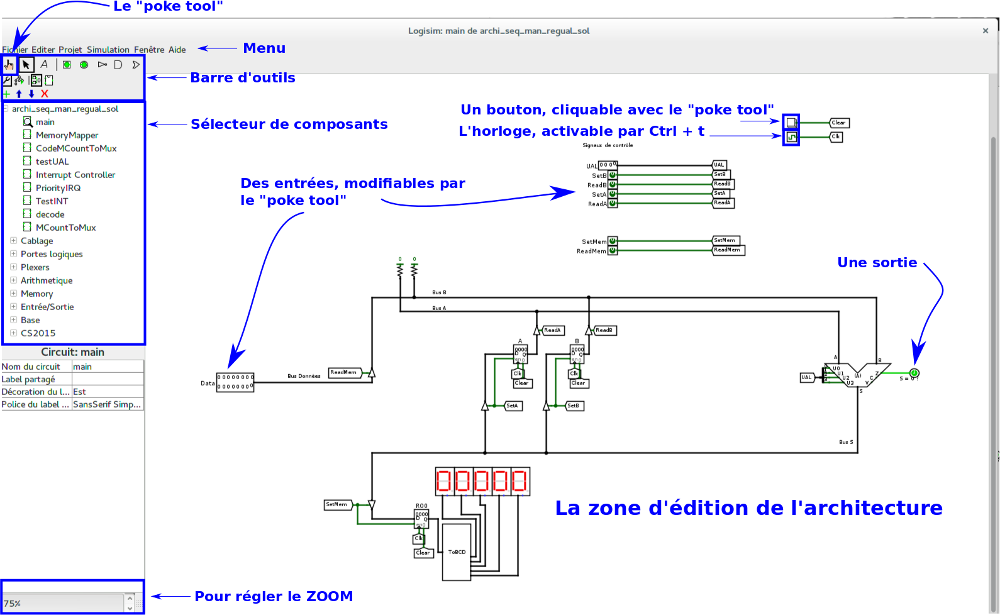
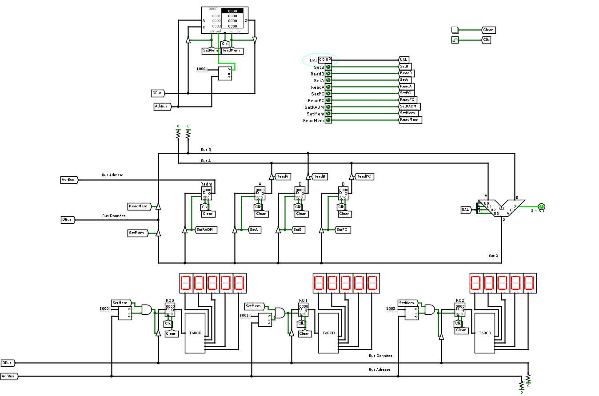

Introduction et utilisation d'un chemin de données : séquencement manuel
Introduction
Le but de ce premier BE est d'introduire un chemin de données qu'on va utiliser tout au long du cours et des BE/TP. On introduit progressivement des éléments de logique combinatoire et de logique séquentielle avec le but utiltime de cette séance d'être capable de piloter à la main le chemin de données pour lui faire réaliser quelques opérations. Nous verrons durant les séances suivantes comment automatiser le pilotage du chemin de données ainsi que quelques extensions de ce chemin de données.
On va voir notamment:
- l'unité arithmétique et logique
- les registres
- la mémoire RAM (Random Access Memory)
- le séquencement du chemin de données
Logisim est installé sur les postes de travail. Lisez la page principale pour savoir comment le démarrer plus 2/3 autres indications.
Charger des registres et effectuer des opérations arithmétiques
Lancement de logisim et chargement de l'architecture
On considère dans un premier temps l'architecture ci-dessous. Téléchargez les fichiers csmetz2015.jar et archi_seq_man_regual.circ et placez les dans le même répertoire. Lancez logisim et chargez le fichier archi_seq_man_regual.circ. L'architecture chargée est représentée ci-dessous.
Avant de jouer avec cette architecture, je vous propose de décrire rapidement quelques éléments de l'interface logisim.

Vos outils principaux dans ce TP sont le "poke tool" et l'horloge. Le poke tool, la petite main en haut à gauche de l'interface, permet de modifier la valeur des entrées, cliquer sur les boutons, .... L'horloge est activée en appuyant sur les touches "Ctrl + t", le petit symbole de l'horloge indiquant si elle est à un niveau haut ou bas. Appuyer sur Ctrl + t déclenche une transition de niveau bas vers niveau haut ou niveau haut vers niveau bas.
Présentation de l'architecture
L'architecture proposée est constituée :
- de signaux de contrôle : des entrées modifiables avec le poke tool, et un bouton Clear pour réinitialiser le contenu des registres,
- d'une entrée pour les données labelisée Data, tout à gauche. Changez son contenu avec le poke tool,
- de deux registres A et B actifs sur front montant d'horloge,
- d'une Unité Arithmétique et Logique,
- d'une sortie avec quelques afficheurs 7 ségments et un registre mémorisant la valeur à afficher (le convertisseur ToBCD est un circuit de logique combinatoire convertissant un nombre binaire en binaire codé décimal pour l'affichage).
La circulation des données sur les bus A, B et S est autorisée par des buffers contrôlés par un signal de contrôle particulier. Par exemple, pour charger le registre A, il faut placer des données sur le bus S, autoriser le chargement du registre (SetA), et déclencher un front montant d'horloge.
En plus des signaux Zero (Z), Retenue (Carry) et de débordement (V), l'UAL fournit 11 opérations décrites dans la table ci-dessous:
| U3 |
U2 |
U1 |
U0 |
Opération |
| 0 |
0 |
0 |
0 |
S = A |
| 0 |
0 |
0 |
1 |
S = B |
| 0 |
0 |
1 |
0 |
S = A ET B |
| 0 |
0 |
1 |
1 |
S = A OU B |
| 0 |
1 |
0 |
0 |
S = non(A) |
| 0 |
1 |
0 |
1 |
S = non(B) |
| 0 |
1 |
1 |
0 |
S = A + B |
| 0 |
1 |
1 |
1 |
S = A - B |
| 1 |
0 |
0 |
0 |
S = A + 1 |
| 1 |
0 |
0 |
1 |
S = A - 1 |
| 1 |
0 |
1 |
0 |
S = A * B |
| 1 |
0 |
1 |
1 |
S = A >> 1 |
| x |
x |
x |
x |
S = Erreur |
Travail à réaliser
En utilisant les signaux de contrôle et l'entrée Data, réalisez les opérations suivantes les unes après les autres. Je vous conseille de remettre à zéro tous les signaux de contrôle avant de passer à l'instruction suivante.
- charger la valeur décimale 16 dans le registre A
- charger la valeur décimale 12 dans le registre B
- afficher le contenu du registre A sur les afficheurs 7 ségments
- afficher le contenu du registre B sur les afficheurs 7 ségments
- sommer le contenu des registres A et B et stocker le résultat dans le registre A
- stocker dans A le résultat de la division entière par deux du contenu du registre A et l'afficher simultanément sur les afficheurs 7 ségments
Connecter le chemin de données avec une mémoire RAM
On introduit maintenant une mémoire dans le chemin de données depuis laquelle on va charger des données et dans laquelle on va également écrire des données:
archi_seq_man.circ. Pour ce faire, on modifie un peu le chemin de données en ajoutant une RAM et deux registres : PC (Program counter) et RADM (Registre d'ADresse Mémoire). On ajoute aussi quelques afficheurs.

La RAM ainsi que les afficheurs sont adressables. Cela veut dire qu'on peut lire/écrire dans la RAM et écrire dans les afficheurs. Pour une lecture, on commencera par 1) placer l'adresse du mot à lire dans le registre RADM, 2) déclencher la lecture avec le signal ReadMem. Pour une écriture, on commencera par 1) placer l'adresse du mot à écrire dans le registre RADM, 2) placer les données à écrire sur le bus S et déclencher l'écriture avec le signal SetMem. Les afficheurs sont dits mappés en mémoire (on verra un plus en détails ce que cela signifie plus tard), c'est à dire qu'ils ont des adresses particulières:
- Si le contenu de RADM est inférieur strict à 0x1000, on adresse la RAM
- Si le contenu de RADM vaut 0x1000, 0x1001 ou 0x1002 on adresse respectivement le premier, deuxième et troisième afficheur
Ne vous laissez pas dérouter par le plat de spaghettis de connexions autour de la mémoire et des afficheurs, en pratique, si je veux afficher le contenu du registre A sur le premier afficheur, je procéderais ainsi :
- 1) mettre 0x1000 dans RADM
- 2) Lire A (ReadA), rediriger A vers S (UAL=0000), et écrire en mémoire (SetMem)
Si je veux charger, dans le registre A, le contenu de la RAM à l'adresse 0x0010, je procéderais ainsi :
- 1) mettre 0x0010 dans RADM
- 2) Lire la mémoire (ReadMem), rediriger B vers S (UAL=0001), et écrire dans le registre A (SetA)
Si je veux écrire le contenu du registre A dans la RAM à l'adresse 0x0010, je procéderais ainsi :
- 1) mettre 0x0010 dans RADM
- 2) Lire A (ReadA), rediriger A vers S (UAL=0000), et écrire en mémoire (SetMem)
Dans le travail que je propose de réaliser, nous allons charger des opérandes en mémoire à partir d'un fichier (bouton droit sur la RAM, "charger l'image" et choisir par example
seq_man.mem) ou bien en éditant directement la RAM (bouton droit sur la RAM, "éditer le contenu").
Chargez l'image en mémoire seq_man.mem et regardez ensuite le contenu de la RAM :
0010 1000 000c 1001 1002
On va considérer les opérandes les unes après les autres (on va bientôt voir le sens de ces valeurs) et pour ce faire, il nous faut disposer d'un registre qui sauvegarde l'adresse de l'opérande en mémoire actuellement considérée; c'est le rôle du
program counter (PC). Pour récupérer une opérande dont l'adresse est dans le PC, il suffit de transférer le PC dans le registre RADM et de lire la mémoire. Chaque fois qu'une opérande est utilisée, on devra
incrémenter le program counter.
Travail à réaliser
En utilisant uniquement les signaux de contrôle (donc on ne modifie pas les registres "à la main"), et après avoir chargé l'image
seq_man.mem dans la RAM,
effectuez les opérations ci-dessous. Je vous conseille
de prendre des notes des signaux de contrôle que vous utilisez pour chaque étape. Notez que pour chacune des opérations ci-dessous, les opérandes sont placées dans la RAM.
- charger la valeur décimale 16 dans le registre A
- afficher le contenu du registre A sur le premier afficheur
- charger la valeur décimale 12 dans le registre B
- afficher le contenu du registre B sur le second afficheur
- soustraire le contenu du registre B au contenu du registre A et stocker le résultat dans le registre A
- afficher le contenu du registre A sur le troisème afficheur
Modifiez le contenu de la mémoire et exécutez le programme avec les signaux de contrôle permettant de faire les divisions par deux successives de 128 jusqu'à un résultat nul en affichant le résultat sur les afficheurs à chaque étape. Quel signal me permettait de détecter qu'il faut s'arrêter ?